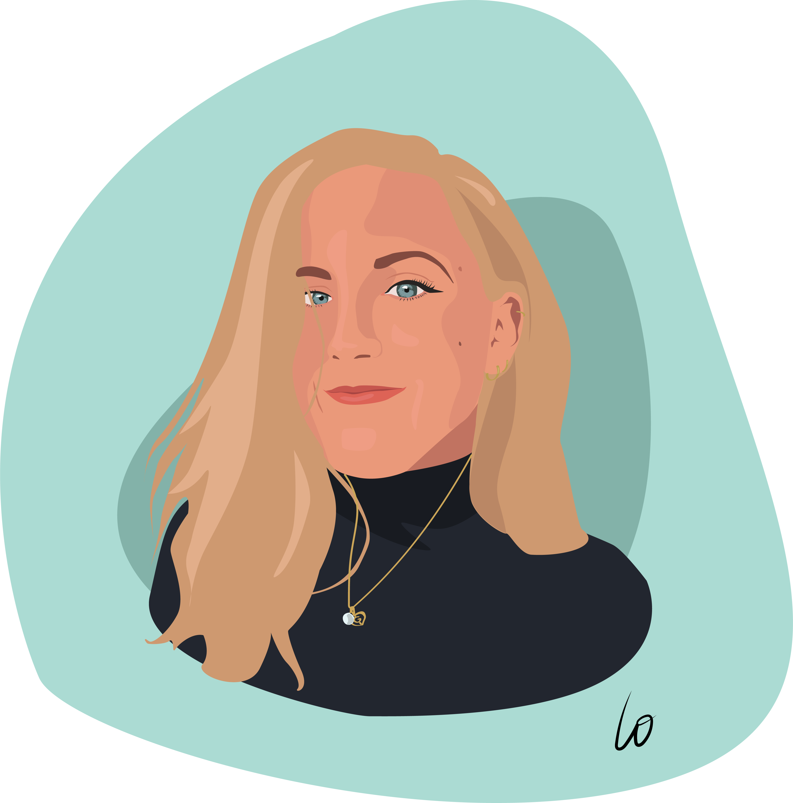

21 ans
Bachelor 3 Webmarketing & Social Media
Mes expériences
-
Assistante chef de projet - Agence Producteurs Locaux -
Nantes (Septembre 2019 - Juillet 2020)
- Création de PLV spécialisées sur les producteurs locaux
- Gestion du compte instagram
- Organisation de réunions, de shooting photo
-
Chargée d'accueil - Siège Banque Populaire Grand Ouest - Nantes (Octobre 2018 à Aout 2019)
- Plannification agenda location de voitures et salles de réunion
- Accueil physique et téléphonique
- Organisation des voyages des collaborateurs
Stages hotellerie - Nantes & Port du Crouesty - Septembre 2016/Juin 2018
- Accueil standart & téléphonique
- Service petit déjeuner, facturation
- Devis et renseignements touristiques
-
Stage Preference Voyages Evenementiel - Nantes - Janvier/Février 2017
- Création de newsletter, carnets de voyages
- Demarchage de prestataires hoteliers et restaurateurs
Mes formations
- Bachelor 3 Webmarketing - My Digital School, Saint Herblain - septembre 2019/Juillet 2020
-
BTS Tourisme - Lycée Carcouet Nantes
Obtenu en Juin 2018
-
Baccalauréat STMG spécialité mercatique - Lycée Beaumont Redon
Obtenu en Juin 2016
Mes compétences
Langues :
- Français Native
- Anglais Courant
- Espagnol Débutant
Logiciels et outils :
- Suite Adobe Indesign, Illustrator, Photoshop...
- Suite Microsoft
- Réseaux sociaux
- Google Analytics, Google Ads
- HTML
Mes hobbies
-
Sport
-
Les voyages
-
La musique